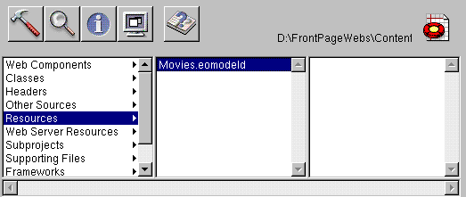

PATH
Documentation > WebObjects 4.5 >
Getting Started With WebObjects
Examining Your Project
Whenever you create a new project, Project Builder populates the project with ready-made files and directories. What it includes depends on the choices you make in the wizard, so this project has a set of files different from those of the GuestBook project.
Like GuestBook, the Movies project contains a Main component (Main.wo). It also includes some files that the GuestBook doesn't have: classes (Application.java, Session.java, DirectAction.java, and Main.java), a model file, and images used by the Main component.
In Project Builder, navigate to the Movie project's Resources category. This is where the model, named Movies.eomodeld, is located. Later in this tutorial you'll use EOModeler to open the model and enhance it.

Navigate to the Web Server Resources category. This is where your project's images are located: DBWizardUpdate.gif, DBWizardDelete.gif, and DBWizardInsert.gif, for the "Save to database," "Delete", and "Insert/New" buttons, respectively.
The biggest difference between the GuestBook and Movies projects is their Main components. Whereas the Main component you created for the GuestBook project was empty, the Main component for the Movies project contains a fully functional user interface. Also, the Main.java class already contains code that supplies the component with behavior. In the next sections, you'll examine the Movies project's Main.wo component and its Main.java class.
© 1999 Apple Computer, Inc. – (Last Updated 24 Aug 99)